This blog usually features posts about our conferences, but nothing IT-related is alien to us, and this Friday, while the whole world is talking about Cyberpunk 2077, I wanted to take a break.
The game's release has sparked a new wave of interest in the cyberpunk genre as a whole, so I wanted to reflect: what has happened to the genre over its entire existence? How is it connected to IT, and how has the development of IT affected it? Why haven't there been any big cyberpunk works for so long?
I've loved cyberpunk for almost twenty years (ever since, back in school, I got my hands on an issue of the Russian gaming magazine «Навигатор игрового мира» with an article about it), and I once devoured William Gibson's books, so now I wanted to pull together everything I know and think on the subject.
What is "cyberpunk"?
First, we need to settle the terminology. What do we even mean by the word "cyberpunk"? And here we run into a difficulty: there's no strict definition, and people have been arguing for decades about what counts and what doesn't.
There's a common definition, echoed by Wikipedia: it's a subgenre of science fiction combining "high tech, low life". Technology has advanced, but it hasn't brought happiness for everyone. On the contrary, the social contract has broken down, and the result is a grim world where only the strongest survive.
It's a good definition, but still incomplete. For example, cyberpunk is also a recognizable visual aesthetic: urban images where signs with hieroglyphs glow in the half-dark, and everything looks both futuristic and slummy.
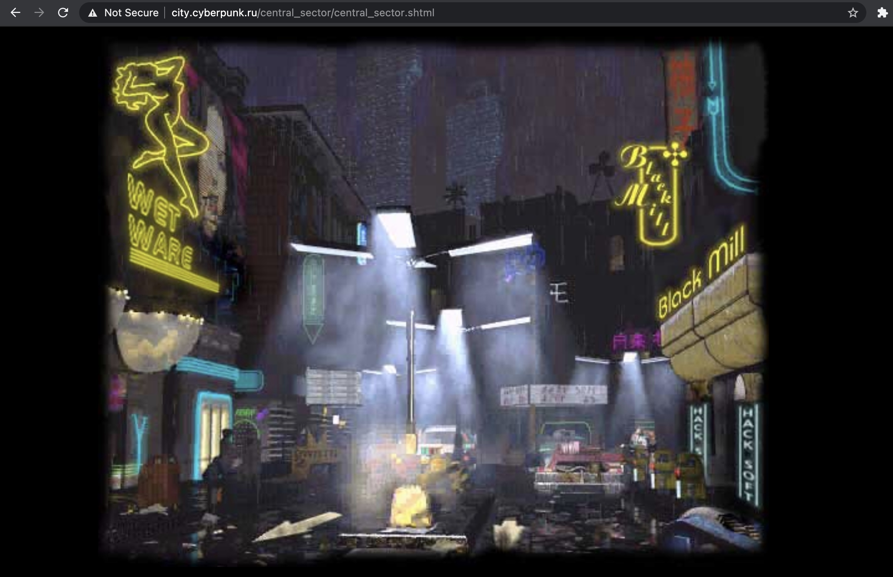
Interestingly, this aesthetic sometimes comes to mind at the sight of ordinary bedroom suburbs in the spirit of "night, street, streetlight, pharmacy" (a famous line by the Russian poet Alexander Blok): there seem to be no particular technological breakthroughs here, and the social contract hasn't broken down in any new way, yet the word is still on the tip of your tongue:
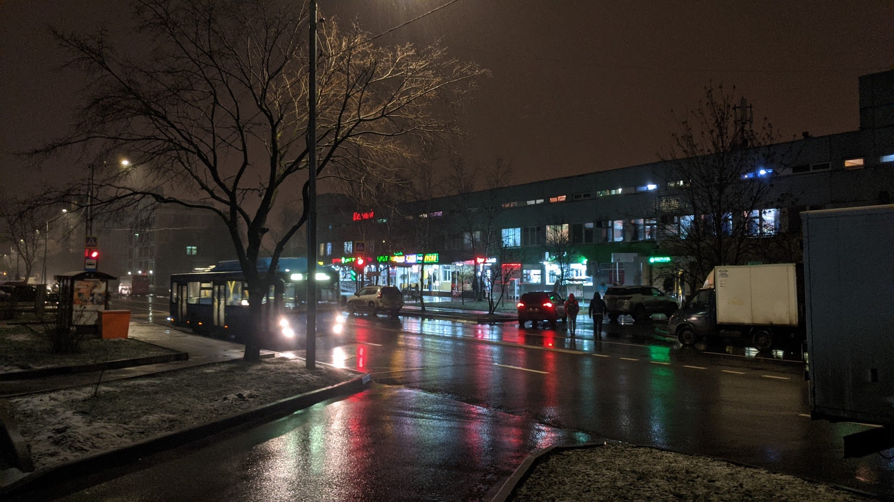
I think there's one more essential component that people often forget to mention (the words "high tech, low life", for instance, say nothing about it directly): cyberpunk is closely tied to IT.
Look at it this way. The words "high tech" mean any advanced technology at all. And then, say, «Futurama» with its space flights or «Tenet» with its reversal of time are also about high tech. But nobody links space to cyberpunk. Cyberpunk is associated with other concepts, all connected to computers in one way or another: "hackers", "cyberspace", "virtual reality", "artificial intelligence". Its heroes don't roam the expanses of space; instead they often sit at a keyboard (or are plugged directly into virtual worlds, so the keyboard is no longer needed). They don't live in old analog science fiction with aliens and mechanical robots, but in digital science fiction, where you can download the skill of flying a helicopter into your head in a couple of seconds.
In my view, all of cyberpunk arose as humanity's attempt to make sense of the computer revolution. In the 80s it was obvious that something big was happening: on monitors all over the world, a new world was emerging, capable of rivaling the "real" one, but it was completely unclear where this would lead. What actually happened decades later, now that we know where it led? Let's look at how it developed.
The 80s
In 1982, two foundational films came out that weren't yet fully cyberpunk in today's sense, but did a lot for it: «Blade Runner» and «Tron». Neither was a box-office hit, but both became cult classics and went on to influence a great deal.
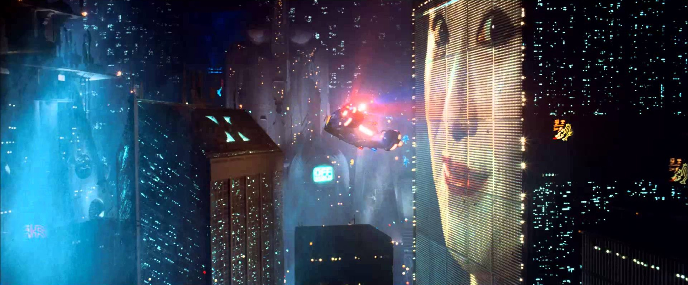
«Blade Runner» strayed quite far from Philip K. Dick's original novel and combined science fiction with the aesthetics of film noir, where nobody can be trusted. The result was a grim future where cars have learned to fly, but they land on dark streets among Asian street-food stalls. All the luckier people have already escaped Earth, and those who remain live in emptied-out skyscrapers with giant advertisements glowing on their walls. In this world, where human warmth is nowhere to be found, you can't really count on a happy ending. These images are still a major source of inspiration today, including in «Cyberpunk 2077», which has direct references to them.
«Tron» wasn't nearly as grim; you can tell right away that everything will end well. But it matters in another respect. First, it involved hacking into a computer system for a good cause, and gave rise to the image of the "good hacker". (It's worth remembering that the word "hacker" back then had none of today's negative connotations of a "malicious intruder" and meant something like "computer whiz".)

Second, the hero was pulled inside the computer world. Blurring the line between the real and virtual worlds would later appear in various forms in «The Matrix» and «The Lawnmower Man», «Nirvana» and «Labyrinth of Reflections» (a Russian novel by Sergei Lukyanenko). And although by today's standards its virtual world looks like it was drawn in Paint, it has its own vivid images: the light cycle scene is so memorable that it later grew into a separate game, Armagetron Advanced.
A year later, in 1983, the word "cyberpunk" itself appeared, thanks to the writer Bruce Bethke, who used it as the title of his short story. He deliberately set out to combine two roots in one word: the first about technology, the second about teenage disregard for the rules. His idea was that the biker hooligans would be succeeded by a generation of rebels who had used computers since childhood, and their parents would have absolutely no idea what to do with them.
The mid-80s saw the heyday of "literary" cyberpunk in general. After short stories like «Johnny Mnemonic», William Gibson took on his debut novel, «Neuromancer», and it became the main cyberpunk book of all time.
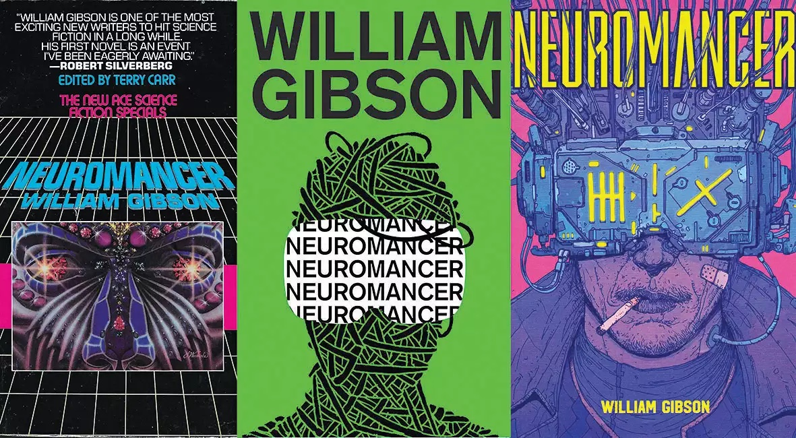
I read it in the early 2000s, when it was about 18 years old, and even then there were plans to adapt it. Another 18 years have passed since then, and the film still hasn't been made, but apparently the plans are still alive. Maybe the hype around «Cyberpunk 2077» will finally push it forward? Either way, if «Blade Runner» was still "about androids" rather than "about computers", here the IT side unfolded in full: this novel popularized the word "cyberspace".
The 80s also saw the genre approached from another direction. In Japan, «Akira» and «Ghost in the Shell» appeared, first as manga and later both as anime adaptations: a cyberpunk of its own was born there.
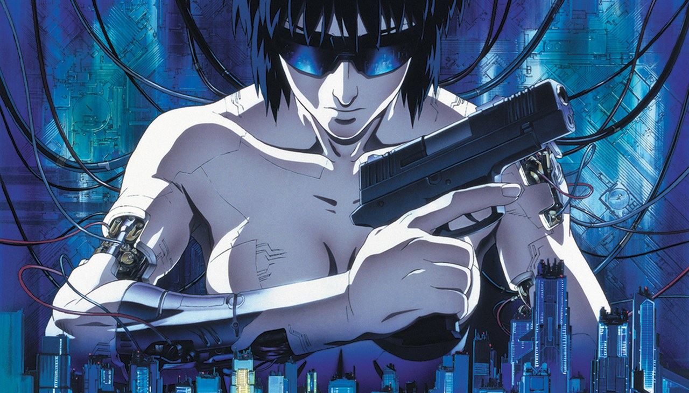
The 90s
If the 80s were the genre's formative years, followed by a niche audience, by the 90s the genre was mature and more mainstream.
Take, for example, the film «Johnny Mnemonic», about a man who carries data in his head.
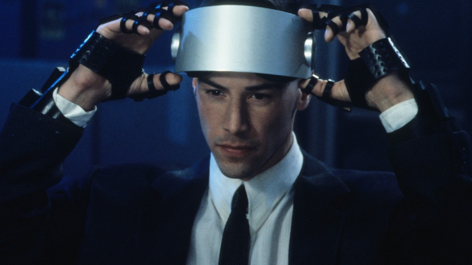
Gibson's original story was read by geeks in the 80s, but the 1995 adaptation got a substantial budget and a star, Keanu Reeves, so it reached a much wider audience, even though critics didn't like it. (A curious little detail: Keanu Reeves's character had 80 gigabytes of data storage, and back then that seemed insanely large. Now «Cyberpunk 2077», which among other things features a new Keanu character, requires a download of over 100 gigabytes.)
The same year, 1995, saw the release of «Hackers», with Angelina Jolie's first notable role. It didn't meet box-office expectations, but it showed that the word "hacker" itself had gone mainstream. And that the mainstream firmly associated it with breaking into systems, not just with computer skills.
But the peak of cyberpunk's popularity was 1999 and «The Matrix». The film about an artificial reality seemed to absorb everything made before it: it borrowed the recognizable green symbols from «Ghost in the Shell» and cast the same Keanu in the lead. And in the end it became super popular (so popular that a third sequel is now on its way), a cult classic, and highly rated by critics.
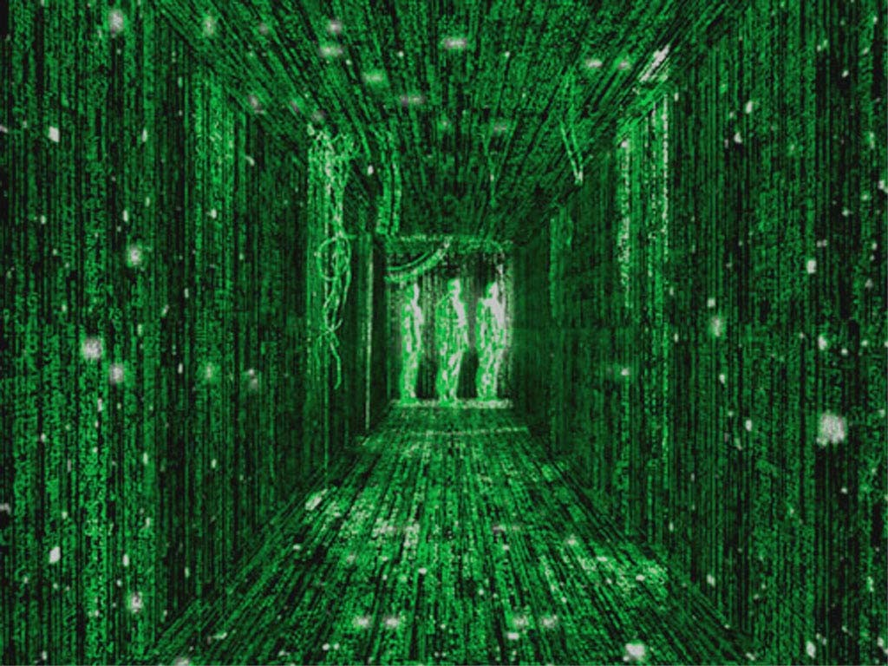
Interestingly, 1999 also saw «The Thirteenth Floor», where the hero is likewise surprised to discover he's inside a virtual world; a year earlier, «Dark City» anticipated them both, and a year before that, Sergei Lukyanenko published «Labyrinth of Reflections». The question of whether the world is "real", and whether one could notice the substitution, clearly occupied minds at the time.
At the same time, the genre was developing in precisely "unreal worlds": computer games. At the turn of the century, two games came out that are associated with cyberpunk first and foremost: System Shock 2 and Deus Ex.
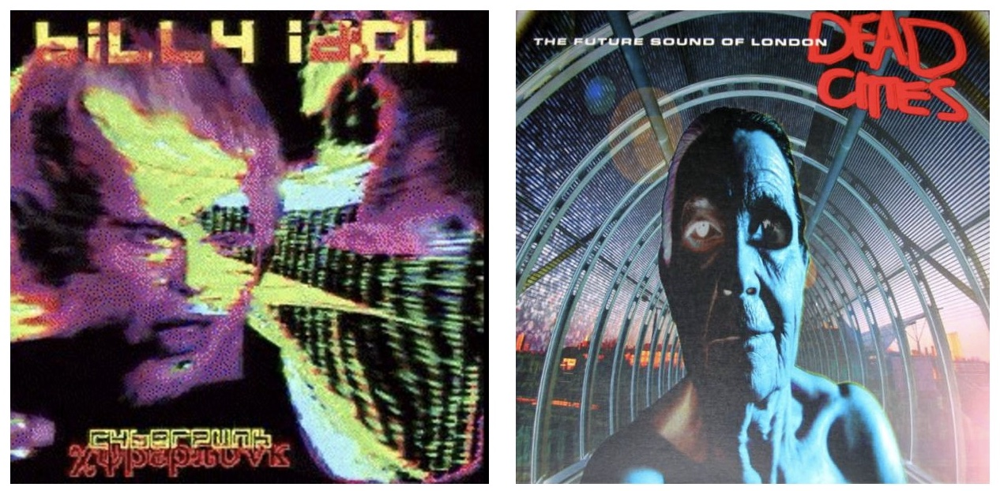
Since we've talked about films, books, anime and games, is there such a thing as cyberpunk music? It's hard to say what that would be: electronic music is the obvious candidate, but there's so much of it, and you can't file all of it under cyberpunk. So what comes to mind first are cases where the musician makes the connection explicitly. Billy Idol, for example, who started out as a plain punk without any cyber prefixes, released a concept album called «Cyberpunk» in 1993. But for me personally, cyberpunk is associated above all with The Future Sound of London's album «Dead Cities» (1996). I think this is exactly how a world crammed with innovation yet falling apart should sound.
The 21st century
In the 90s the genre was developing actively, and then it was as if it had been cut off. Over the past 20 years we haven't seen, it seems, a single truly significant cyberpunk work. (Update: commenters repeatedly mentioned the series «Altered Carbon»; I confess I haven't watched it.)
There were sequels («Blade Runner 2049», «Ghost in the Shell 2», two «Matrix» films), none of which matched the original. There were films that could be counted as cyberpunk with a stretch: Wikipedia includes Neill Blomkamp's «District 9» and «Chappie», which show South African low life, but aliens and robots appeared in science fiction long before the 80s and personal computers.
You could also recall that in the early 2000s, people far removed from computers and hacking flirted with the theme: around 2001 I saw the video «Жора хакер» ("Zhora the Hacker") by a Russian pop singer with the pseudonym «НАСТЯ.da.ru», and I'm still trying to recover from it.
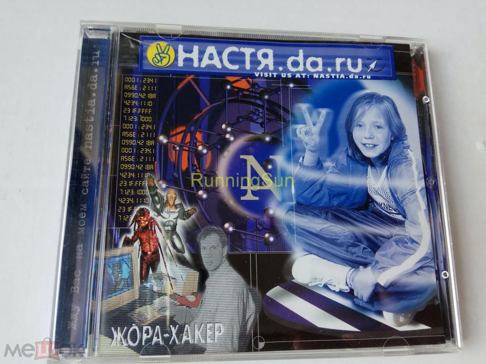
In the 2010s, the game «Watch Dogs» explored hacking, the films «Her» and «Ex Machina» explored artificial intelligence, and the series «Black Mirror» started scaring people with technology. But the word "cyberpunk" was rarely mentioned in connection with any of them.
So, it seems, the main statement of these years came not from film or books but from the auto industry. Elon Musk's Cybertruck is a cyberpunk car in everything, from its name to the time and place chosen for its premiere ("November 2019, Los Angeles" is the opening title of «Blade Runner»).
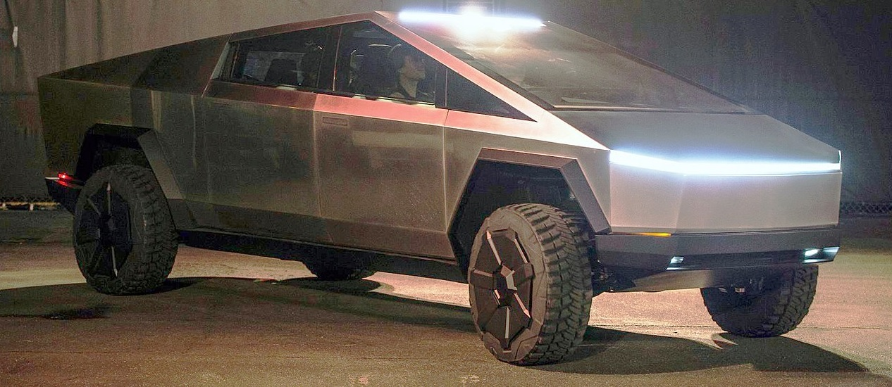
Meanwhile, with real cyberpunk in short supply, an ironic community appeared on VK, the Russian social network: «киберпанк, который мы заслужили» ("the cyberpunk we deserve"), with examples of how technology fits into our realities ("dear neighbors, please don't park by the tree, I charge my electric car here").
The community has a pinned post: "Cyberpunk is dead. Not because the genre is bad; on the contrary, it's a great genre, a prophetic one. It just stopped being science fiction. We already live in cyberpunk. 'High tech, low life' is our life, all these smartphones and augmented reality mixed with fried soup and peeling wallpaper."
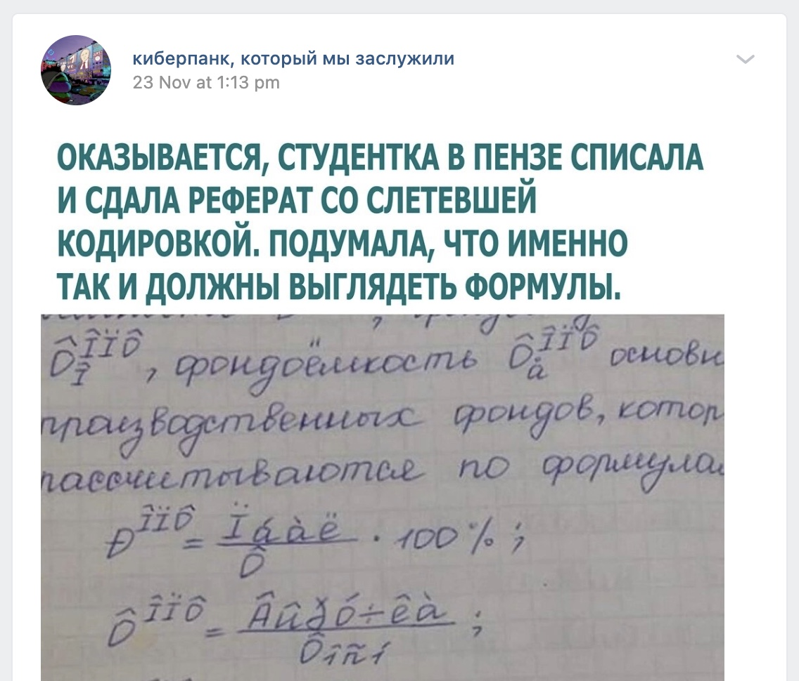
And now we have «Cyberpunk 2077», the first big statement in a long time. But reviews note that for all its scale, it's derivative: it uses the established cyberpunk canon rather than adding anything fundamentally new to it. And over the years that canon has become outdated (smartphones, for instance, appeared, and classic cyberpunk barely predicted them), yet the game keeps following it. The result is no longer "the future", but "the future as it was imagined in the past".
And the audience perceives it accordingly. If neon signs were once associated with the future, now for people they're an 80s aesthetic. Nobody believes anymore that hackers will take over the world tomorrow, but you can reminisce about the times when it seemed real. The musical phenomenon of vaporwave and synthwave, which also reimagines the 80s and uses cyberpunk imagery, is partly built on this.
So even though the title «Cyberpunk 2077» names a year in the future, people's interest in it is largely nostalgia for the past.
What it all means
Why did a genre that developed so actively in the 20th century wither in the 21st? I may be wrong, but I see the following reasons.
First, in the 80s it was clear that the development of personal computers would give humanity a lot of new things, but it was completely unclear what exactly. And that gave rich food for the imagination: you could picture any virtual worlds indistinguishable from real ones, and it was easy to believe in them. Today's news no longer excites the imagination. Apple's switch to ARM processors is a very impressive piece of engineering, but it doesn't fundamentally change the end user's life. What new cyberspaces can you dream of in connection with ARM?
Second, I see a fundamental change in the following. To use a computer effectively in the 80s, you had to be a geek, a "hacker". New devices appeared that promised fundamentally new possibilities (instant communication with people all over the planet!), but only some people could master them. This created a romantic aura around them and gave rise to the image of the "all-powerful hacker". That's why, say, in the world of «The Matrix» the key skill is the ability to read code. The protagonist, while still inside the Matrix, has tied his life to code, and then he reaches a new level by learning to see the code of the Matrix itself. Even his apartment number, 101, can be read as a binary number.
Now everything is different. The main possibilities (like that same instant communication) are in everyone's hands and no longer require any special skills: just open a messenger and type, simple as that. An IT person might root their phone to "squeeze more out of it", but from an ordinary user's point of view, what will rooting change, apart from their banking app refusing to work? "Hacking" and the ability to read code have become something like a car mechanic's skills: it's cool to understand what's under the hood, but most people can drive perfectly well without it, and when something breaks, there are repair shops. Where's the romance and the future in cleaning a carburetor?
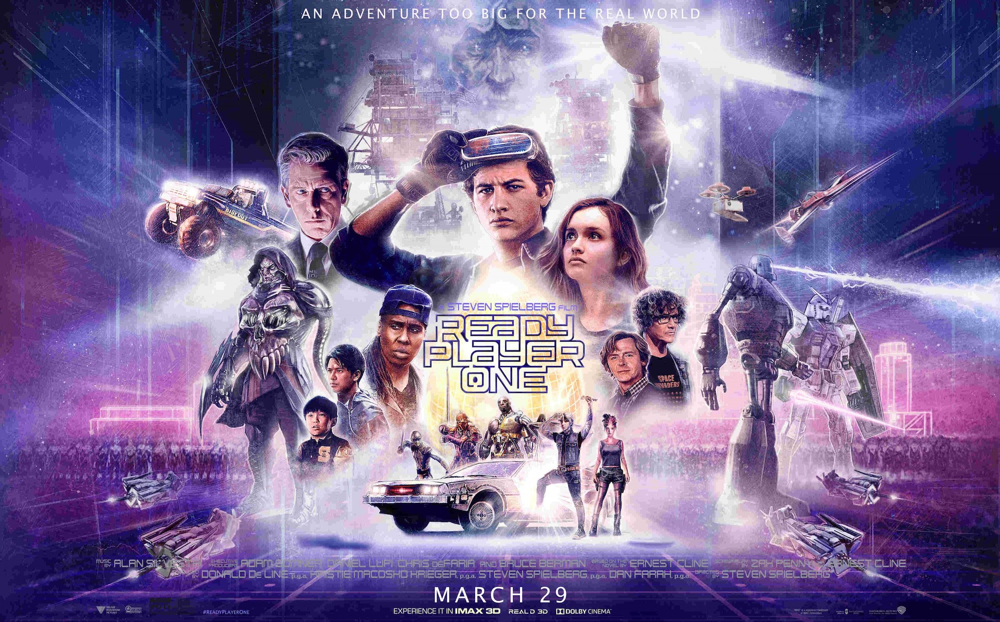
Interestingly, the 2018 film «Ready Player One» is formally cyberpunk. Advanced technology? Yes. People living in slums? Yes. A hero with a headset over his face wandering through virtual worlds? Yes. So why is the word "cyberpunk" usually not applied to it? Apart from Spielberg's optimism, I think the difference is this: the hero isn't a hacker but a gamer. Not a programmer but a user. In the real world, VR is developing too, and headsets keep getting better, but anyone can buy and use an Oculus Quest 2; there's no hacking involved, so where's the cyberpunk?
The watershed around 2000, after which important new cyberpunk stopped appearing, was, in my view, the mass spread of the internet. Everything important a computer could offer became available to the ordinary user, who knows nothing about FidoNet point numbers. And you can clearly see how "ordinary people" took over from geeks in making sense of the internet: for example, in 2002 the Russian singer Zemfira released the song «Webgirl», in which the internet plays an important role for the woman using it. And today even a song like that isn't needed: the internet has become too familiar and taken for granted.
In short, Habr, the time of our romance has passed: IT is no longer a promise of an amazing future for the chosen few, just an industry like any other.
But we can touch that romance one last time, properly, by launching «Cyberpunk 2077».
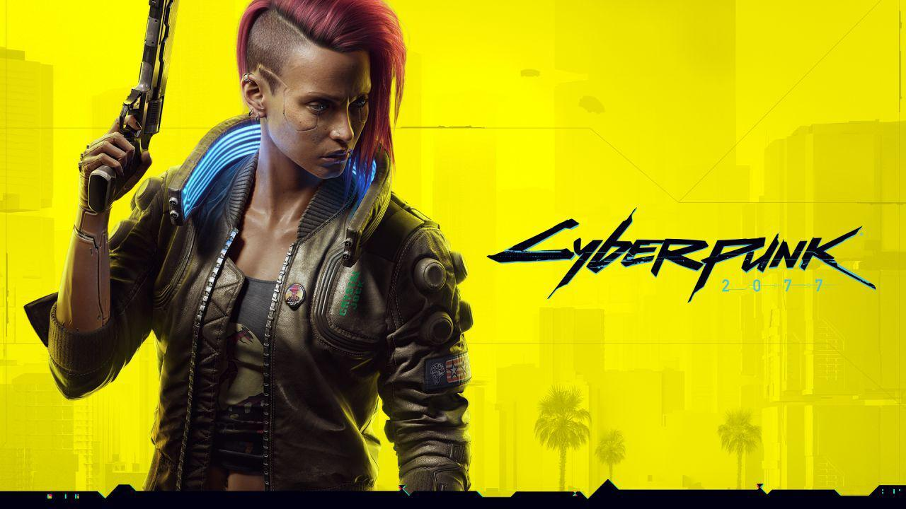